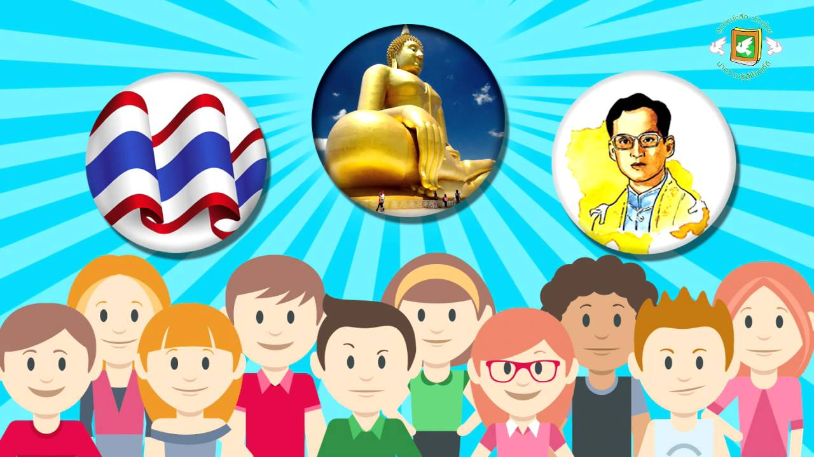

สังคมศึกษา

สังคมศึกษาคือวิชาที่ศึกษาเกี่ยวกับมนุษย์ การอยู่ร่วมกันในสังคม และสิ่งต่าง ๆ ที่เกี่ยวข้องกับการดำรงชีวิตของคนในสังคม โดยครอบคลุมหลายด้าน เช่น ประวัติศาสตร์ที่ศึกษาเหตุการณ์และความเป็นมาของอดีต ภูมิศาสตร์ที่ศึกษาเกี่ยวกับสถานที่และสิ่งแวดล้อม เศรษฐศาสตร์ที่ศึกษาเรื่องการผลิต การบริโภค และการใช้ทรัพยากร หน้าที่พลเมืองที่ศึกษาเกี่ยวกับสิทธิ หน้าที่ กฎหมาย และการปฏิบัติตนในฐานะสมาชิกของสังคม รวมถึงศาสนาและวัฒนธรรมที่ช่วยให้เข้าใจหลักการดำเนินชีวิตและความแตกต่างของผู้คน ดังนั้น สังคมศึกษาจึงเป็นวิชาที่ช่วยให้ผู้เรียนเข้าใจตนเองและสังคม มีความรับผิดชอบ เคารพสิทธิของผู้อื่น และสามารถอยู่ร่วมกับผู้อื่นได้อย่างมีความสุขและเหมาะสม